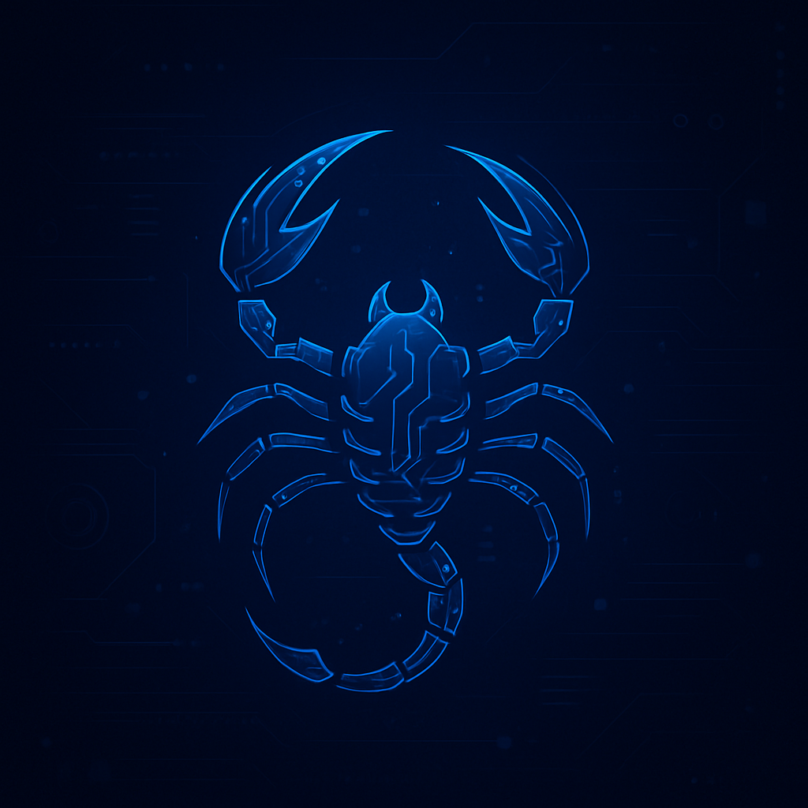

Blog
Scopri dietro le quinte dello sviluppo dei nostri giochi, leggi le ultime novità e approfondisci il mondo di ScorpionGames.

Il viaggio di Velocity Rush
Dal concept iniziale fino al lancio: come abbiamo creato un racer futuristico che mette alla prova i riflessi. Scopri le sfide tecniche e le ispirazioni dietro a Velocity Rush.
Leggi di più

Dietro le quinte di Puzzle Land
Un viaggio nella progettazione dei livelli e nel design artistico di Puzzle Land. Ti raccontiamo come i colori e le forme geometrice si trasformano in sfide divertenti.
Leggi di più